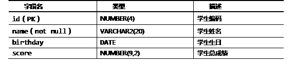

- insert into v_emp_salesman values(1234, ‘tina’, 3500, 20);
A.对复杂视图可以执行插入数据操作
B.为了禁止在视图上执行DML操作，可以在建立视图时设置READ ONLY约束
C.CHECK OPTION约束表示，通过视图所做的修改，必须在视图的可见范围内
D.对视图的操作,最终都会转化成对基本表的操作
视图中数据显示的形式如图-1所示。
图-1
A．序列是Oracle提供的可用于产生一系列唯一数字的数据库对象。
B．通常情况下，一个序列为一张表提供主键值，但一个序列也可以为多个表提供主键值。
C．使用序列时，伪列NEXTVAL返回序列生成的下一个值。
D．任何时候都可以使用伪列CURRVAL返回当前序列值。
有学员表student，表结构如表－1所示：
表－1学员表student信息
1. 创建一个序列stu_seq，初始值是1000，步进是2。
2. 构造SQL语句，向student数据表中插入一条记录，其信息如下：学号使用上一步创建的序列生成，学生姓名为张无忌，生日为1987-11-17，总成绩为639分。
已知学生表student，该表两个字段学号（id）、姓名（name），其中id列为主键列，创建该表的SQL语句如下所示：
- create table student(
- id number(10) primary key,
- name varchar2(20)
- );
有课程表course ，该表有两个字段编号（id）、课程名称（name），其中id列为主键列，创建该表的SQL语句如下所示：
- create table course(
- id number(10) primary key,
- name varchar2(20)
- );
有选课表sc，该表有三个字段学号（sid）、课程编号（cid）、成绩（score），创建该表的SQL语句如下所示：
- create table sc(
- sid number(10),
- cid number(10),
- score number(5,2)
- );
本案例要求建立下列外键关联关系：
1.sc表的学号列（sid），外键关联学生表（student）的学号列（id）。
2.sc表的课程编号列（cid），外键关联课程表（course）的编号列（id）。
请写出建立上述关联关系的SQL语句。